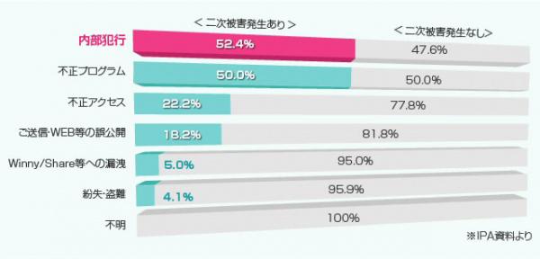
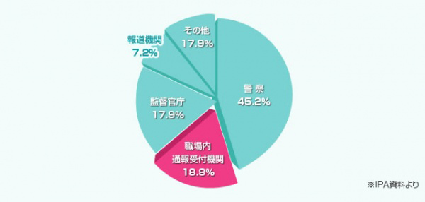
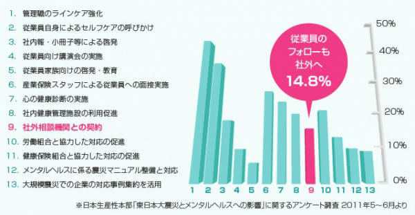
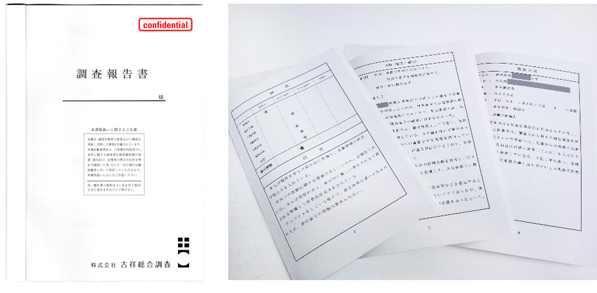

調査内容・ご契約の流れ
service調査内容
社内にとどまらず、社外、企業間、市場の中での
人、物、資産などに関するあらゆる調査を行います。
01反社会的勢力調査
取引先企業や役員、株主などの関係者が反社会的勢力と関係していないかを徹底調査。独自の情報網と専門的な知見により、企業のコンプライアンス強化と重大リスクの未然防止を支援します。
海外に連携拠点を置いており、国内外を問わず反社会勢力のチェックが可能です。
- 国内外の反社会的勢力チェック
- 国内はもちろん、中国、韓国、マレーシア、ベトナム、フィリピンに連携
拠点を置いており、海外マフィアも含む国際的な調査が可能です。
- 費用：
- 40,000円～
02法務・知的財産
契約内容や知的財産に関するリスクを事前に調査・分析し、法的観点からのリスクを可視化。
企業活動における安全性と権利保護をサポートします。
また、係争や民事トラブルにも対応し、状況の把握や証拠の収集を行います。
- 裁判や係争への対策
- 民事トラブルや係争において、状況の把握や核となる証拠の収集を行い、適切な対応をサポートします。
- 関連調査
- ブランドや特許等の侵害の有無や使用の実態を調査します。
- 費用：
- お見積り
03人事
採用候補者や社員の経歴・評判・勤務実態などを多角的に調査。
さらに、情報漏洩や退職後の動向調査などにも対応し、実態を把握します。
採用ミスマッチや内部トラブルのリスクを低減し、健全な組織づくりに貢献します。
- 採用調査
- 適切な人材確保に役立つ調査履歴をもとに、経歴、性格素行、健康状態、勤怠状況、退職理由、生活状況などについての側面から取材を行い、
客観的な情報を提供します。
- 人材の実態調査
- 社員による情報漏洩の解明、人材流失調査、退職後の社員の動向調査等から実態を調査します。
- 費用：
- お見積り
04労務システム開発
企業ごとの業務内容や運用に合わせ、最適な労務システムを設計・開発します。
現場の実務に即したシステム構築により、業務の効率化と生産性向上を実現。
あわせて、情報の一元管理とセキュリティ強化を図り、安定した業務運用を支えます。
- 労務システムの設計・開発
- 現行業務や情報管理の整理・課題の洗い出しを行い、企業ごとの運用に最適化したシステムを設計・開発します。
業務フローの見直しから設計・実装まで一貫して対応し、実務に即した運用を実現します。
- 費用：
- お見積り
05ネットによる誹謗中傷・風評被害対策
インターネット上の誹謗中傷や風評をいち早く検知し、拡散状況を調査・分析します。
被害の実態把握から対策提案まで一貫して行い、企業ブランドと信用の保護を支援します。
さらに、社内の行動ログデータをリアルタイムで分析し、リスクの未然防止にも対応します。
- リスクモニタリング
- 24時間365日体制でモニタリングし、炎上の火種を早期検知。
その後の対処方針についてもアドバイスを提供します。
- リスクコンサルティング
- インターネット上のネガティブ情報の表示抑制・改善に向けて、
情報発信の強化などを通じたコンサルティングサービスを提供します。
- リスクインテリジェンス
- 社内の行動ログデータをリアルタイムに分析し、社員の不正行為やリスクの兆候をいち早く検知。トラブルの未然防止につなげます。
- 費用：
- お見積り
06エシカルハッカーによる専門的な技術調査
高度化・巧妙化するサイバー攻撃に対し、専門的な技術調査を通じて、システムやネットワークの脆弱性を洗い出します。
未然防止はもちろん、万が一被害が発生した場合にも、原因の分析から対策提案まで一貫して対応。
- セキュリティ弱点分析
- サイバー攻撃の手口を熟知したエシカルハッカーが、企業システムやネットワークの弱点を分析。未然に被害を防ぎ、リスクを最小化します。
- 被害原因分析
- 万が一被害にあった場合に、ログ解析やデジタルフォレンジック調査により、侵入経路の特定や加害者特定に向けた証拠分析を行います。
- 費用：
- お見積り
07不動産調査
土地・建物の近隣環境や近隣のトラブル歴などを調査。
購入・取引時のリスクを事前に把握し、安心できる意思決定をサポートします。
また、賃貸物件や駐車場の周辺環境を調査するなど、管理・運営をサポートします。
- 近隣調査
- 土地建物、マンション購入時に、近隣でのトラブル歴、近隣の人物風評、
近隣の反社会的勢力拠点有無などを調査します。
- 管理・運営調査
- 賃貸建物や駐車場の効率的な管理、周辺環境調査、入居者解約後の原状回復や近隣トラブルの対策のご提案をします。
- 費用：
- お見積り
08M&A支援・企業承継サポート
後継者不足などの課題を背景に、事業承継やM&Aの重要性が高まっています。
企業ごとの状況や目的に応じて、情報提供から提案・アドバイス、専門家や企業の紹介まで一貫して対応。
円滑な事業承継と企業価値の向上に向けた支援を行います。
- M&Aに関する情報提供
- 市場動向や制度、M&A事例などの情報を企業ごとの状況に応じて提供します。意思決定に必要な情報をわかりやすく整理し、検討段階からの判断を支援します。
- M&Aの提案・アドバイス
- 企業の課題や目的を整理し、現状の棚卸しや優先順位の明確化を行ったうえで、最適な承継・成長戦略を提案します。
状況に応じた具体的なアドバイスを行い、円滑な意思決定を支援します。
- 専門家や企業の紹介
- 企業ごとの状況や目的に応じて、最適な専門家や企業を選定・紹介します。
候補先の検討や連携に向けた調整をサポートし、円滑な事業承継・M&Aの実現を支援します。
- 費用：
- お見積り
09ガバナンスパートナー
企業経営においては、不正行為やコンプライアンス違反、内部統制の不備など、組織運営に関わるさまざまなリスクへの対応が求められています。
当社では、企業の健全な経営体制の構築を支援するガバナンスパートナーとして、調査・情報収集のノウハウを活かしながら、問題の早期発見やリスク管理をサポートします。
必要に応じて各分野の専門家とも連携し、企業価値の維持・向上に向けた支援を行います。
- 企業リスクの調査・分析
- 不正行為や情報漏えい、コンプライアンス違反など、企業活動に潜むリスクを調査・分析します。
- 専門家との連携サポート
- 案件内容に応じて弁護士や司法書士、税理士などの専門家と連携し、適切な解決策をご提案します。
調査から課題解決までをワンストップで支援できる体制を整えています。
- 費用：
- 10,000円～
総務
-
- 不審人物・クレーマー・反社会調査
- お見積り
トラブルを巡るの人物の調査、背後関係の調査です。
-
- 違法電波・情報漏洩対策
- 基本30, 000円
盗聴･盗撮検索､固定電話回線3 回線まで含む最新機器により、盗聴器・盗撮器の検索を行います。
-
- 特定人物の精査
- お見積り
雇用、保証人、新規取引先に関連する人物調査です。
-
- 審査
- お見積り
ビル、テナント等の入居契約者の審査調査です。
人事
-
- 採用調査
- 30,000円～ /1名（※その他、交友関係、金銭トラブル等は別途料金）
適切な人材確保に役立つ調査です。履歴書をもとに、経歴・性格素行・健康状態・勤怠状況・退職理由・生活状況などについて側面から取材を行い、客観的な情報を提供致します。
-
- 能力・適正調査
- 各2,000円～（※取材による人物評価等､別途料金）
cUBIC ( 個人特性分析)､ TA ( 交流分析) 等配属、昇格時の参考資料として、能力適正と人物評価等の調査です。
-
- 問題人物の実態調査
- お見積り
社員による情報漏洩の解明、人材流失調査、退職後の社員の動向調査から実態を調査します。
法務・知的財産
-
- 裁判や係争への対応
- お見積り
民事トラブル係争など、状況把握や核となる証拠の収集をします。
-
- 関連調査
- お見積り
ブランドや特許等の侵害や使用の実態を調査します。
マーケティング
-
- マーケティング・環境調査
- 50,000円～
店舗周辺の住宅戸数、人口動態、世帯年収、最寄駅別乗車人数等の実態調査、FC店舗のサービスの実態と顧客満足度調査、
店舗環境や顧客が求める商品やサービスの情報収集調査
不動産調査
-
- リスク管理・環境調査
- お見積り
土壌汚染調査等様々なリスク調査、CRE対策提案等を行います。
-
- 管理・運営調査
- お見積り
賃貸建物や駐車場の効率的な管理、周辺環境調査、入居者解約後の現状回復や近隣トラブルの対策のご提案を致します。
-
- その他
- お見積り
土地建物評価、建物法定調査業務等。
行動調査
-
- 証拠収集調査、実態調査
- 基本60, 000 円/3時間 延長15, 000 円/時間
証拠収集調査･実態調査等 スタッフ2名
* ガソリン代､高速代等別途
* スタッフ増員等別途
顧問契約
-
- 顧問契約
- 月額30,000円
月1回訪問: 違法電波検索､問題社員の対応等
各種調査､通常料金より1 0%割引
社外調査
-
1. 二次被害につながりやすい漏洩態様分類
情報漏洩は内部犯行によって二次被害発生を引き起こしやすい為、いかに内部犯行を食い止めるかが重要です。

-
2. 職場で重大な法違反行為が行われていた場合の通報先
組織内で解決したい一方、告発を受け入れる体制はできていますか？ 「外部に委託」もひとつの方法です。

-
3. 東日本大震災後の従業員に対するメンタルヘルス対応

flowご契約の流れ
現状報告や料金状況などを常時ご連絡致します。
課題・トラブル発生
打合せ・面談
-
お問い合わせ・
面談日決定 -
ご面談・内容把握
-
取り組み・ご提案
ご依頼
ご依頼契約締結
分析・調査
-
分析・調査開始
-
報告書提出
-
お支払い
トラブル解決後アフターフォロー
打合せ
今後の対策・
取り組み提案
ご依頼
ご依頼契約締結
対策
-
対策取り組み実施
-
お支払い
報告書例調査結果・分析結果

調査結果・分析結果などを報告書にまとめて提出しております。
また、トラブル解決後のアフターフォローも充実しておりますので、お気軽にご相談ください。
吉祥総合調査では名古屋を中心に、採用調査、人事調査、総務調査などの企業調査を行っております。
採用時の身辺調査や、社内・社外でのトラブルでお困りの際は当社にご相談ください。
目に見えない変化（サイン）を見える（クリア）な報告書に致します。